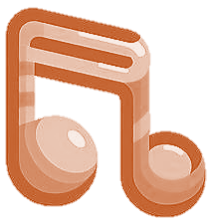

Biblioteca de Acordes online, seu guia para aprender acordes
novos;
Biblioteca de Acordes online, seu guia para aprender acordes
novos; Metrônomo online, seu controle preciso sobre o tempo e
acentuações na batida;
Metrônomo online, seu controle preciso sobre o tempo e
acentuações na batida; Vídeos explicativos, com explicações e dicas de como
tocar;
Vídeos explicativos, com explicações e dicas de como
tocar; Comentarios e respostas da comunidade, para te manter
conectado
e conhecer novos gostos, técnicas e dicas.
Comentarios e respostas da comunidade, para te manter
conectado
e conhecer novos gostos, técnicas e dicas.
BIBLIOTECA DE ACORDES
Bem vindo à nossa biblioteca de acordes interativa! Seu guia online para o mundo dos acordes.
Desenvolvido para ajudar músicos de todos os níveis, esta ferramenta simplifica o processo
de
aprendizado oferecendo um guia em nomes, posição dos dedos, qualidade e mais!
Como Usar?
O identificador de acordes é uma ferramenta multifacetada, construída com o propósito de
simplificar sua jornada musical.
Entrega diversas funções, incluindo a habilidade de decifrar como tocar um acorde específico
baseado em seu nome, oferecendo diversas interpretações e facilitando instruções na posição
dos
dedos.
Além disso, ajuda você a reconhecer as notas incorporadas em um acorde e ajuda a determinar
o
intervalos que existem dentro dele.